CODING AGENTS AS PIXEL WORLD MODELS
traex/DeepSeek-V4.1-Flash · 0132
点击播放 · 原生 RGB 像素
逐轮保存的候选
回放视频、检查图与代码变化。
每份候选均可单独播放。实际图片检查记录在下方工具轨迹中。
候选 01播放与检查图
点击播放 · 原生 RGB 像素
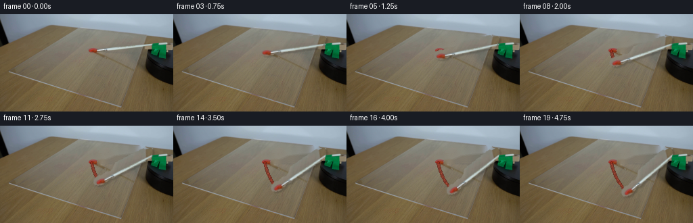
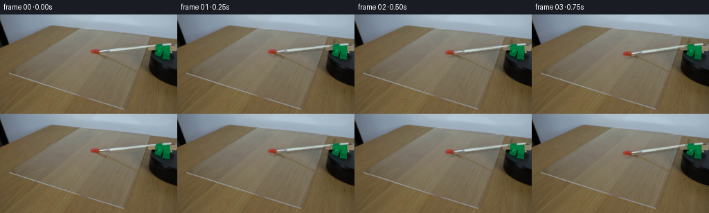
展开代码变化
--- 上一保存版本
+++ 本次保存版本
@@ -0,0 +1,237 @@
+from pathlib import Path
+
+import cv2
+import numpy as np
+from PIL import Image
+
+import artifact_io
+
+
+ROOT = Path(__file__).resolve().parent
+WIDTH, HEIGHT = 256, 144
+FRAMES = 20
+
+
+def smoothstep(value):
+ value = np.clip(value, 0.0, 1.0)
+ return value * value * (3.0 - 2.0 * value)
+
+
+def make_masks(frame):
+ h, w = frame.shape[:2]
+ yy, xx = np.indices((h, w))
+
+ # Tight hull around the photographed brush. The green clamp is kept out so
+ # it can be composited back over the moving handle.
+ hull = np.array(
+ [
+ [127, 50],
+ [130, 46],
+ [136, 44],
+ [142, 45],
+ [149, 43],
+ [155, 44],
+ [161, 41],
+ [167, 35],
+ [219, 29],
+ [224, 30],
+ [225, 36],
+ [223, 42],
+ [218, 48],
+ [163, 53],
+ [157, 55],
+ [150, 54],
+ [144, 57],
+ [137, 58],
+ [131, 57],
+ [127, 54],
+ ],
+ np.int32,
+ )
+ brush_hull = np.zeros((h, w), np.uint8)
+ cv2.fillPoly(brush_hull, [hull], 255)
+
+ rgb = frame.astype(np.float32)
+ green = (
+ (rgb[:, :, 1] > rgb[:, :, 0] * 1.32)
+ & (rgb[:, :, 1] > rgb[:, :, 2] * 1.20)
+ & (xx > 214)
+ )
+ overhead_bar = (xx > 214) & (yy < 35) & (rgb.mean(axis=2) > 130)
+ static_clamp = (green | overhead_bar).astype(np.uint8)
+ static_clamp = cv2.dilate(
+ static_clamp, np.ones((2, 2), np.uint8), iterations=1
+ )
+
+ brush = brush_hull.copy()
+ brush[static_clamp > 0] = 0
+ return brush, static_clamp
+
+
+def build_clean_plate(frame, brush_mask):
+ h, w = frame.shape[:2]
+ dilated = cv2.dilate(brush_mask, np.ones((3, 3), np.uint8), iterations=1)
+ plate = cv2.inpaint(
+ frame[:, :, ::-1],
+ dilated,
+ 3,
+ cv2.INPAINT_TELEA,
+ )[:, :, ::-1].astype(np.float32)
+
+ # Put the photographed red dollop back onto the cleared acrylic. This is
+ # the material the bristles enter and drag as the arm rotates.
+ yy, xx = np.indices((h, w))
+ rgb = frame.astype(np.float32)
+ red = (
+ (rgb[:, :, 0] > 88)
+ & (rgb[:, :, 0] > rgb[:, :, 1] * 1.24)
+ & (rgb[:, :, 0] > rgb[:, :, 2] * 1.18)
+ & (xx >= 127)
+ & (xx <= 146)
+ & (yy >= 45)
+ & (yy <= 60)
+ )
+ red_soft = cv2.GaussianBlur(red.astype(np.float32), (3, 3), 0.55)
+ red_soft = np.maximum(red.astype(np.float32), red_soft)
+ plate = plate * (1.0 - red_soft[..., None]) + rgb * red_soft[..., None]
+ return plate
+
+
+def composite_brush(frame, clean_plate, brush_mask, static_clamp, angle):
+ h, w = frame.shape[:2]
+ pivot = (221.0, 37.0)
+ rotation = cv2.getRotationMatrix2D(pivot, angle, 1.0)
+
+ sprite = cv2.warpAffine(
+ frame.astype(np.float32),
+ rotation,
+ (w, h),
+ flags=cv2.INTER_LINEAR,
+ borderMode=cv2.BORDER_REPLICATE,
+ )
+ alpha = cv2.warpAffine(
+ brush_mask.astype(np.float32) / 255.0,
+ rotation,
+ (w, h),
+ flags=cv2.INTER_LINEAR,
+ borderMode=cv2.BORDER_CONSTANT,
+ borderValue=0,
+ )
+ alpha = cv2.GaussianBlur(alpha, (3, 3), 0.42)
+
+ # Soft contact shadow, biased toward the table light's lower-right side.
+ shadow = np.roll(np.roll(alpha, 2, axis=0), 3, axis=1)
+ shadow = cv2.GaussianBlur(shadow, (5, 5), 1.0)
+ image = clean_plate * (1.0 - 0.17 * shadow[..., None])
+
+ image = image * (1.0 - alpha[..., None]) + sprite * alpha[..., None]
+
+ static_alpha = cv2.GaussianBlur(
+ static_clamp.astype(np.float32), (3, 3), 0.45
+ )
+ image = (
+ image * (1.0 - static_alpha[..., None])
+ + frame.astype(np.float32) * static_alpha[..., None]
+ )
+ return np.clip(image, 0, 255).astype(np.uint8)
+
+
+def draw_paint_trail(image, angle):
+ if angle <= 0.05:
+ return image
+
+ pivot = np.array([221.0, 37.0], np.float32)
+ tip_start = np.array([134.8, 53.8], np.float32)
+ samples = np.linspace(0.0, angle, max(8, int(angle * 2) + 8))
+ points = []
+ for sample_angle in samples:
+ radians = np.deg2rad(sample_angle)
+ cosine, sine = np.cos(radians), np.sin(radians)
+ vector = tip_start - pivot
+ # This is the same screen-space rotation used by getRotationMatrix2D.
+ rotated = np.array(
+ [
+ cosine * vector[0] + sine * vector[1],
+ -sine * vector[0] + cosine * vector[1],
+ ],
+ np.float32,
+ )
+ points.append(pivot + rotated)
+ points = np.round(np.array(points)).astype(np.int32)
+
+ layer = image.astype(np.float32)
+ trail = np.zeros_like(image)
+ if len(points) >= 2:
+ cv2.polylines(
+ trail,
+ [points],
+ False,
+ (93, 25, 17),
+ 3,
+ lineType=cv2.LINE_AA,
+ )
+ cv2.polylines(
+ trail,
+ [points],
+ False,
+ (139, 37, 22),
+ 2,
+ lineType=cv2.LINE_AA,
+ )
+ cv2.polylines(
+ trail,
+ [points],
+ False,
+ (171, 54, 34),
+ 1,
+ lineType=cv2.LINE_AA,
+ )
+
+ # A few tiny, deterministic beads give the wet smear some edge texture.
+ for index in range(2, len(points) - 1, 4):
+ px, py = points[index]
+ offset = 1 if index % 8 == 2 else -1
+ cv2.circle(
+ trail,
+ (int(px + offset), int(py + 1)),
+ 1,
+ (121, 31, 19),
+ -1,
+ lineType=cv2.LINE_AA,
+ )
+
+ trail_mask = np.max(trail, axis=2).astype(np.float32) > 3
+ trail_mask = cv2.GaussianBlur(
+ trail_mask.astype(np.float32), (3, 3), 0.35
+ )
+ layer = layer * (1.0 - 0.72 * trail_mask[..., None]) + trail.astype(
+ np.float32
+ ) * (0.72 * trail_mask[..., None])
+ return np.clip(layer, 0, 255).astype(np.uint8)
+
+
+def generate():
+ source = np.array(Image.open(ROOT / "first_frame.png").convert("RGB"))
+ assert source.shape == (HEIGHT, WIDTH, 3)
+
+ brush_mask, static_clamp = make_masks(source)
+ clean_plate = build_clean_plate(source, brush_mask)
+
+ frames = np.empty((FRAMES, HEIGHT, WIDTH, 3), np.uint8)
+ frames[0] = source
+
+ # Clockwise, with a gentle start and a slow settle past the paint.
+ max_angle = 34.0
+ for index in range(1, FRAMES):
+ progress = index / (FRAMES - 1)
+ angle = max_angle * smoothstep(progress)
+ painted = draw_paint_trail(clean_plate, angle)
+ frames[index] = composite_brush(
+ source, painted, brush_mask, static_clamp, angle
+ )
+
+ return frames
+
+
+if __name__ == "__main__":
+ artifact_io.save(generate(), ROOT)
可观测工具轨迹
实际执行的命令与返回图片。
命令 1exit 0
/bin/bash -c "pwd && rg --files -g 'prompt.txt' -g 'GENERATION_RULES.md' -g 'first_frame.png' -g '"'!*.mp4'"'"
命令 2exit 0
/bin/bash -c "sed -n '1,240p' GENERATION_RULES.md"
命令 3exit 0
/bin/bash -c "sed -n '1,240p' prompt.txt"
命令 4exit 0
/bin/bash -c "find . -maxdepth 2 -type f -printf '%p\\n' | sort | head -200"
命令 5exit 0
/bin/bash -c "sed -n '1,260p' artifact_io.py"
命令 6exit 0
/bin/bash -c "python - <<'PY'
from PIL import Image
im=Image.open('first_frame.png')
print(im.mode, im.size)
print(im.getpixel((0,0)), im.getpixel((128,72)), im.getpixel((145,53)))
PY"命令 7exit 0
/bin/bash -c "sed -n '1,220p' player_template.html"
命令 8exit 0
/bin/bash -c "python - <<'PY' import importlib.util for x in ['cv2','scipy','numpy','PIL','skimage']: print(x, bool(importlib.util.find_spec(x))) PY"
命令 9exit 0
/bin/bash -c "python - <<'PY'
from PIL import Image
im=Image.open('first_frame.png')
im.crop((110,25,256,105)).resize((584,320)).save('.tmp/crop.png')
PY"命令 10exit 0
/bin/bash -c "python - <<'PY'
from PIL import Image
im=Image.open('first_frame.png')
im.resize((1024,576)).save('.tmp/full4x.png')
PY"命令 11exit 0
/bin/bash -c "python - <<'PY'
from PIL import Image, ImageDraw
im=Image.open('first_frame.png').resize((1024,576), Image.Resampling.NEAREST)
d=ImageDraw.Draw(im)
for x in range(0,256,10):
X=x*4
d.line((X,0,X,576), fill=(255,0,255), width=1)
d.text((X+2,2),str(x),fill=(255,0,255))
for y in range(0,144,10):
Y=y*4
d.line((0,Y,1024,Y), fill=(0,255,255), width=1)
d.text((2,Y+1),str(y),fill=(0,255,255))
im.save('.tmp/grid.png')
PY"命令 12exit 0
/bin/bash -c "python - <<'PY'
from PIL import Image
im=Image.open('first_frame.png')
im.crop((128,30,240,66)).resize((896,288),Image.Resampling.NEAREST).save('.tmp/brushcrop.png')
PY"命令 13exit 0
/bin/bash -c "python - <<'PY'
import numpy as np
from PIL import Image
im=np.array(Image.open('first_frame.png'))
# print 4px block means in brush region as compact coordinates
for y in range(32,64,2):
print(y, ' '.join(f'{im[y,x,0]:3d}/{im[y,x,1]:3d}/{im[y,x,2]:3d}' for x in range(132,234,6)))
PY"命令 14exit 0
/bin/bash -c "python - <<'PY'
import cv2, numpy as np
im=cv2.imread('first_frame.png')
# sample points
for p in [(134,50),(142,52),(152,53),(165,48),(175,47),(190,44),(200,43),(210,42),(218,41),(224,41),(132,52),(138,55)]:
x,y=p; print(p,im[y,x][::-1])
PY"命令 15exit 0
/bin/bash -c "python - <<'PY'
import cv2, numpy as np
im=cv2.imread('first_frame.png')
# print coordinate x extents of bright brush mask per y
rgb=im[:,:,::-1].astype(float)
mask=(rgb[:,:,0]>145)&(rgb[:,:,1]>145)&(rgb[:,:,2]>145)
for y in range(38,60):
xs=np.where(mask[y,120:240])[0]+120
if len(xs): print(y,xs.min(),xs.max(),len(xs))
PY"命令 16exit 0
/bin/bash -c "python - <<'PY'
from PIL import Image
im=Image.open('first_frame.png')
im.crop((124,25,256,76)).resize((1056,408),Image.Resampling.NEAREST).save('.tmp/brushwide.png')
PY"命令 17exit 0
/bin/bash -c "python - <<'PY'
import cv2, numpy as np
from PIL import Image
im=cv2.imread('first_frame.png')[:,:,::-1]
h,w=im.shape[:2]
r,g,b=[im[:,:,i].astype(float) for i in range(3)]
yy,xx=np.mgrid[:h,:w]
poly=np.array([[131,47],[138,46],[145,45],[151,45],[158,43],[164,39],[219,33],[226,33],[227,43],[220,48],[163,52],[158,55],[150,54],[145,55],[138,57],[131,55]],np.int32)
inside=np.zeros((h,w),np.uint8);cv2.fillPoly(inside,[poly],1)
bright=(r>155)&(g>150)&(b>145)
red=(r>95)&(r>g*1.28)&(r>b*1.20)&(xx>=136)&(xx<149)&(yy>43)&(yy<60)
metal=((xx>=146)&(xx<164)&(yy>=45)&(yy<=55)&(r>145)&(g>145)&(b>145))
mask=((bright|red|metal)&(inside>0)).astype(np.uint8)
mask=cv2.morphologyEx(mask,cv2.MORPH_CLOSE,np.ones((3,3),np.uint8))
mask=cv2.dilate(mask,np.ones((2,2),np.uint8),iterations=1)
# preview mask over dim
out=(im*.25).astype(np.uint8);out[mask>0]=im[mask>0]
Image.fromarray(out).crop((120,25,235,66)).resize((920,328),Image.Resampling.NEAREST).save('.tmp/maskpreview.png')
# inpaint
inp=cv2.inpaint(im[:,:,::-1],cv2.dilate(mask,np.ones((3,3),np.uint8),iterations=1),3,cv2.INPAINT_TELEA)[:,:,::-1]
Image.fromarray(inp).crop((120,25,235,66)).resize((920,328),Image.Resampling.NEAREST).save('.tmp/inpaint.png')
print(mask.sum())
PY"命令 18exit 0
/bin/bash -c "python - <<'PY'
from PIL import Image
im=Image.open('.tmp/inpaint.png')
# actual generated dimensions? 920x328 crop corresponds x120..235 y25..66
print(im.size)
PY"命令 19exit 0
/bin/bash -c "python - <<'PY'
from PIL import Image
im=Image.open('first_frame.png').crop((118,20,256,78)).resize((1104,464),Image.Resampling.NEAREST)
im.save('.tmp/source_region.png')
PY"命令 20exit 0
/bin/bash -c "python - <<'PY' import cv2,numpy as np for a in [-30,30]: M=cv2.getRotationMatrix2D((100,100),a,1) p=np.array([50.,100.,1.]) print(a,M@p) PY"
命令 21exit 0
/bin/bash -c "python - <<'PY'
import cv2,numpy as np
from PIL import Image
im=cv2.imread('first_frame.png')[:,:,::-1]
h,w=im.shape[:2]; yy,xx=np.mgrid[:h,:w]
r,g,b=[im[:,:,i].astype(float) for i in range(3)]
# strict brush silhouette via polygon plus color; preserve antialiasing later via dilation
poly=np.array([[131,47],[138,46],[144,45],[152,45],[159,42],[164,38],[220,32],[228,33],[227,44],[219,48],[164,52],[159,56],[151,54],[145,56],[138,58],[131,56]],np.int32)
inside=np.zeros((h,w),np.uint8);cv2.fillPoly(inside,[poly],1)
bright=(r>130)&(g>128)&(b>124)&(r+g+b>395)
red=(r>90)&(r>g*1.25)&(r>b*1.2)
core=((bright|red)&(inside>0)).astype(np.uint8)
# hand-add expected full object around core, clipping only to polygon + local expansion
mask=inside.astype(np.uint8)
# For now color core diagnostics only
out=(im*.22).astype(np.uint8);out[core>0]=im[core>0]
Image.fromarray(out).crop((118,20,236,66)).resize((944,368),Image.Resampling.NEAREST).save('.tmp/core.png')
print('core',core.sum())
PY"命令 22exit 0
/bin/bash -c "python - <<'PY'
import cv2, numpy as np
from PIL import Image
im=cv2.imread('first_frame.png')[:,:,::-1]
g=cv2.cvtColor(im,cv2.COLOR_RGB2GRAY)
edges=cv2.Canny(g,20,60)
# crop local
Image.fromarray(edges[25:66,120:236]).resize((928,328),Image.Resampling.NEAREST).save('.tmp/edges.png')
PY"命令 23exit 0
/bin/bash -c "python - <<'PY'
import cv2,numpy as np
from PIL import Image
im=cv2.imread('first_frame.png')[:,:,::-1]
g=cv2.cvtColor(im,cv2.COLOR_RGB2GRAY).astype(float)
# estimate brush bottom and top boundaries along x by local brightness / red
for x in range(130,231,4):
col=im[30:60,x]
print(x, 'bright y', [30+i for i,c in enumerate(col) if c.mean()>145], 'red y',[30+i for i,c in enumerate(col) if c[0]>100 and c[0]>1.25*c[1] and c[0]>1.2*c[2]])
PY"命令 24exit 0
/bin/bash -c "python - <<'PY' import cv2 print(cv2.getRotationMatrix2D((100,100),30,1)) PY"
命令 25exit 0
/bin/bash -c "python - <<'PY'
from PIL import Image,ImageDraw
im=Image.open('first_frame.png').resize((1024,576),Image.Resampling.NEAREST)
d=ImageDraw.Draw(im)
for p in [(221,44),(223,38),(224,31),(216,40),(165,48),(147,52),(141,55),(131,55)]:
x,y=p; X=x*4;Y=y*4
d.ellipse((X-5,Y-5,X+5,Y+5),outline='magenta',width=3)
d.text((X+8,Y-10),f'{x},{y}',fill='magenta')
im.save('.tmp/pivots.png')
PY"命令 26exit 0
/bin/bash -c "python - <<'PY'
import cv2, numpy as np
im=cv2.imread('first_frame.png')[:,:,::-1]
h,w=im.shape[:2];yy,xx=np.mgrid[:h,:w];r,g,b=[im[:,:,i].astype(float) for i in range(3)]
poly=np.array([[131,47],[138,46],[145,44],[152,45],[159,42],[165,37],[218,31],[227,32],[228,37],[226,45],[219,49],[164,53],[159,57],[151,55],[145,57],[138,59],[131,56]],np.int32)
inside=np.zeros((h,w),np.uint8);cv2.fillPoly(inside,[poly],1)
# Accept everything in polygon except obvious background colors close to table.
core=inside>0
# We will preview full polygon; then crop manually based visual.
out=(im*.22).astype(np.uint8);out[core]=im[core]
cv2.polylines(out,[poly],True,(255,0,255),1)
from PIL import Image
Image.fromarray(out).crop((118,20,236,66)).resize((944,368),Image.Resampling.NEAREST).save('.tmp/polypreview.png')
PY"命令 27exit 0
/bin/bash -c "python - <<'PY'
import cv2,numpy as np
im=cv2.imread('first_frame.png')[:,:,::-1]
# color at black under brush
for y in range(33,50):
print(y,' '.join(str(im[y,x].mean().round().astype(int)) for x in range(214,231)))
PY"命令 28exit 0
/bin/bash -c "python - <<'PY'
from PIL import Image
im=Image.open('first_frame.png')
im.crop((124,27,256,64)).resize((1056,296),Image.Resampling.NEAREST).save('.tmp/brush8x.png')
PY"命令 29exit 0
/bin/bash -c "python - <<'PY'
import numpy as np
from PIL import Image
im=np.array(Image.open('first_frame.png'))
# Print bottom boundary estimated by vertical gradient for x
for x in range(146,220,5):
c=im[36:60,x].mean(axis=1)
dy=np.diff(c)
print(x, 'max',36+np.argmax(dy), round(dy.max(),1), 'vals',[(y,round(c[y-36],0)) for y in range(41,57) if y==41 or abs(c[y-36]-c[y-37])>5])
PY"命令 30exit 0
/bin/bash -c "python - <<'PY'
import cv2, numpy as np
from PIL import Image
src=np.array(Image.open('first_frame.png'))
h,w=src.shape[:2]
poly=np.array([[128,50],[131,46],[136,45],[142,45],[148,43],[154,44],[160,42],[166,36],[220,30],[224,31],[225,36],[223,42],[218,48],[162,54],[156,56],[149,55],[143,58],[136,59],[131,57],[128,54]],np.int32)
mask=np.zeros((h,w),np.uint8);cv2.fillPoly(mask,[poly],255)
# exclude static green clamp and top crossbar: mask only brush
# soften alpha
alpha=mask.astype(np.float32)/255
alpha=cv2.GaussianBlur(alpha,(3,3),0.55)
# base inpaint
m_dil=cv2.dilate(mask,np.ones((3,3),np.uint8),iterations=1)
base=cv2.inpaint(src[:,:,::-1],m_dil,4,cv2.INPAINT_TELEA)[:,:,::-1]
# sprite RGBA premult? Keep rgb src, alpha
# foreground clamp: green pixels and white top bar in x216+ and green all x216+
rgbf=src.astype(np.float32)
green=(rgbf[:,:,1]>rgbf[:,:,0]*1.4)&(rgbf[:,:,1]>rgbf[:,:,2]*1.2)&(np.indices((h,w))[1]>214)
whitebar=(np.indices((h,w))[1]>214)&(np.indices((h,w))[0]<35)&(rgbf.mean(2)>130)
fg=green|whitebar
fg=cv2.dilate(fg.astype(np.uint8),np.ones((2,2),np.uint8),iterations=1)>0
# save base
Image.fromarray(base).save('.tmp/base_test.png')
# warp sprite
pivot=(221.0,37.0)
for fi,ang in enumerate([0,5,10,15,18]):
M=cv2.getRotationMatrix2D(pivot,ang,1.0)
sprite=cv2.warpAffine(src[:,:,::-1].astype(np.float32),M,(w,h),flags=cv2.INTER_LINEAR,borderMode=cv2.BORDER_REPLICATE)
sa=cv2.warpAffine(alpha,M,(w,h),flags=cv2.INTER_LINEAR,borderMode=cv2.BORDER_CONSTANT,borderValue=0)
out=base.astype(np.float32).copy()
# shadow
sh=cv2.warpAffine(alpha,M,(w,h),flags=cv2.INTER_LINEAR)
sh=np.roll(sh,3,axis=1);sh=np.roll(sh,2,axis=0);sh=cv2.GaussianBlur(sh,(5,5),1.2)
out*= (1-0.16*sh[...,None])
# brush
out=out*(1-sa[...,None])+sprite*sa[...,None]
# foreground static clamp overlay
a=fg.astype(np.float32);a=cv2.GaussianBlur(a,(3,3),0.5)
out=out*(1-a[...,None])+src.astype(np.float32)*a[...,None]
# paint residue for frames after 0: red smear from initial to moved tip
if ang>0:
# current tip is transformed old point
p=np.array([132.,53.,1.]);q=M@p
pts=np.array([[132,53],[(132+q[0])/2, (53+q[1])/2-1],[q[0],q[1]]],np.float32)
# draw red rough stroke
cv2.polylines(out,[pts.astype(np.int32)],False,(155,43,28),2,cv2.LINE_AA)
cv2.circle(out,(132,53),3,(145,38,24),-1,lineType=cv2.LINE_AA)
Image.fromarray(np.clip(out,0,255).astype(np.uint8)).save(f'.tmp/test{fi}.png')
PY"命令 31exit 0
/bin/bash -c "python - <<'PY'
from PIL import Image
for i in [1,2,3,4]:
im=Image.open(f'.tmp/test{i}.png')
im.crop((115,22,256,75)).resize((846,318),Image.Resampling.NEAREST).save(f'.tmp/test{i}crop.png')
PY"命令 32exit 0
/bin/bash -c "python - <<'PY'
from PIL import Image
im=Image.open('.tmp/base_test.png')
im.crop((115,22,256,75)).resize((846,318),Image.Resampling.NEAREST).save('.tmp/basecrop.png')
PY"命令 33exit 0
/bin/bash -c "python - <<'PY'
import cv2, numpy as np
from PIL import Image
src=np.array(Image.open('first_frame.png'))
h,w=src.shape[:2]; Y,X=np.indices((h,w))
# brush geometry, preserve the real handle. The alpha starts as a manually traced hull.
poly=np.array([[127,50],[130,46],[136,44],[142,45],[149,43],[155,44],[161,41],[167,35],[219,29],[224,30],[225,36],[223,42],[218,48],[163,53],[157,55],[150,54],[144,57],[137,58],[131,57],[127,54]],np.int32)
mask=np.zeros((h,w),np.uint8);cv2.fillPoly(mask,[poly],255)
# exclude green clamp, which remains foreground
green=(src[:,:,1]>src[:,:,0]*1.32)&(src[:,:,1]>src[:,:,2]*1.2)&(X>214)
# crossbar and stem static white shape top-right
bar=(X>215)&(Y<35)&(src.mean(2)>130)
static=(green|bar).astype(np.uint8)
static=cv2.dilate(static,np.ones((2,2),np.uint8),iterations=1)
brush=mask.copy(); brush[static>0]=0
alpha=cv2.GaussianBlur(brush.astype(np.float32)/255,(3,3),0.5)
base=cv2.inpaint(src[:,:,::-1],cv2.dilate(brush,np.ones((3,3),np.uint8)),5,cv2.INPAINT_TELEA)[:,:,::-1]
Image.fromarray(base).save('.tmp/base2.png')
pivot=(221.0,37.0)
def make(ang):
M=cv2.getRotationMatrix2D(pivot,ang,1.0)
sprite=cv2.warpAffine(src[:,:,::-1].astype(np.float32),M,(w,h),flags=cv2.INTER_LINEAR,borderMode=cv2.BORDER_REPLICATE)
sa=cv2.warpAffine(alpha,M,(w,h),flags=cv2.INTER_LINEAR,borderMode=cv2.BORDER_CONSTANT,borderValue=0)
out=base.astype(np.float32).copy()
# subtle contact shadow, down-right
sh=cv2.warpAffine(alpha,M,(w,h),flags=cv2.INTER_LINEAR,borderMode=cv2.BORDER_CONSTANT,borderValue=0)
sh=np.roll(np.roll(sh,2,axis=0),3,axis=1);sh=cv2.GaussianBlur(sh,(5,5),1.1)
out*=1-0.14*sh[...,None]
out=out*(1-sa[...,None])+sprite*sa[...,None]
# static clamp over moving brush
a=cv2.GaussianBlur(static.astype(np.float32),(3,3),0.5)
out=out*(1-a[...,None])+src.astype(np.float32)*a[...,None]
return np.clip(out,0,255).astype(np.uint8),M
for i,a in enumerate([0,6,12,18,24]):
o,M=make(a);Image.fromarray(o).save(f'.tmp/rot{i}.png')
# crop
Image.fromarray(o[22:75,115:256]).resize((846,318),Image.Resampling.NEAREST).save(f'.tmp/rot{i}crop.png')
PY"命令 34exit 0
/bin/bash -c "python - <<'PY'
from PIL import Image
for i in [0,1,2,3,4]:
im=Image.open(f'.tmp/rot{i}crop.png')
print(i,im.size)
PY"命令 35exit 0
/bin/bash -c "python - <<'PY'
import cv2,numpy as np
from PIL import Image
src=np.array(Image.open('first_frame.png')).astype(np.float32)
h,w=src.shape[:2]
poly=np.array([[127,50],[130,46],[136,44],[142,45],[149,43],[155,44],[161,41],[167,35],[219,29],[224,30],[225,36],[223,42],[218,48],[163,53],[157,55],[150,54],[144,57],[137,58],[131,57],[127,54]],np.int32)
shape=np.zeros((h,w),np.uint8);cv2.fillPoly(shape,[poly],255)
# handle base mask: keep red paint/dollop area as part of the scene
handle=shape.copy()
handle[:, :145]=0
# remove static green/white clamp from inpaint area (will overlay)
Y,X=np.indices((h,w)); rgb=src
green=(rgb[:,:,1]>rgb[:,:,0]*1.32)&(rgb[:,:,1]>rgb[:,:,2]*1.2)&(X>214)
bar=(X>215)&(Y<35)&(rgb.mean(2)>130)
static=(green|bar).astype(np.uint8)
static=cv2.dilate(static,np.ones((2,2),np.uint8),iterations=1)
handle[static>0]=0
# fill by vertical interpolation from nearest clean pixels above/below
base=src.copy()
for x in range(140,227):
ys=np.where(handle[:,x]>0)[0]
if len(ys)==0: continue
y0,y1=ys.min(),ys.max()
top=max(0,y0-2); bot=min(h-1,y1+2)
# find nearest non-mask on either side within 8 px
ta=top
while ta>=0 and handle[ta,x]>0: ta-=1
ba=bot
while ba<h and handle[ba,x]>0: ba+=1
if ta<0: ta=top
if ba>=h: ba=bot
# Blend table textures; add slight horizontal jitter for grain continuity.
ctop=src[ta,x].copy(); cbot=src[ba,x].copy()
for y in ys:
t=(y-y0+1)/(y1-y0+2)
base[y,x]=(1-t)*ctop+t*cbot
# mild inpaint smoothing across x
# blur only mask pixels a touch
base_blur=cv2.GaussianBlur(base,(3,3),0.55)
base[handle>0]=base_blur[handle>0]
# add dollop: keep original red pixels from source, but smooth fringe
red=(src[:,:,0]>90)&(src[:,:,0]>src[:,:,1]*1.3)&(src[:,:,0]>src[:,:,2]*1.25)&(X<147)&(Y>45)&(Y<62)
# retain source red region, already there; soften boundary only
Image.fromarray(np.clip(base,0,255).astype(np.uint8)).save('.tmp/base3.png')
Image.fromarray(np.clip(base[22:75,115:256],0,255).astype(np.uint8)).resize((846,318),Image.Resampling.NEAREST).save('.tmp/base3crop.png')
PY"命令 36exit 0
/bin/bash -c "python - <<'PY'
import cv2,numpy as np
from PIL import Image
im=cv2.imread('first_frame.png')[:,:,::-1]
for p in [(132,53),(135,54),(137,55),(139,54),(145,51),(150,52),(153,53),(156,54),(158,53),(161,50),(164,47)]:
x,y=p;print(p,im[y,x])
PY"命令 37exit 0
/bin/bash -c "python - <<'PY'
import cv2,numpy as np
from PIL import Image
src=np.array(Image.open('first_frame.png')).astype(np.float32)
h,w=src.shape[:2];Y,X=np.indices((h,w))
poly=np.array([[127,50],[130,46],[136,44],[142,45],[149,43],[155,44],[161,41],[167,35],[219,29],[224,30],[225,36],[223,42],[218,48],[163,53],[157,55],[150,54],[144,57],[137,58],[131,57],[127,54]],np.int32)
shape=np.zeros((h,w),np.uint8);cv2.fillPoly(shape,[poly],255)
# exclude green clamp / white overhead stem from brush mask
green=(src[:,:,1]>src[:,:,0]*1.32)&(src[:,:,1]>src[:,:,2]*1.2)&(X>214)
bar=(X>215)&(Y<35)&(src.mean(2)>130)
static=(green|bar).astype(np.uint8);static=cv2.dilate(static,np.ones((2,2),np.uint8),iterations=1)
brush=shape.copy();brush[static>0]=0
# keep red tip source pixels to preserve pigmented texture
redtip=(X<147)&(Y>=47)&(Y<=59)&(src[:,:,0]>90)&(src[:,:,0]>src[:,:,1]*1.25)
# create mask inpaint by nearest-column color (less smearing)
base=src.copy()
md=cv2.dilate(brush,np.ones((3,3),np.uint8),iterations=1)
for x in range(140,227):
ys=np.where(md[:,x]>0)[0]
if len(ys)==0:continue
# take nearest valid above and below
ya=ys.min()-1; yb=ys.max()+1
while ya>=0 and md[ya,x]>0:ya-=1
while yb<h and md[yb,x]>0:yb+=1
if ya<0:ya=ys.min()-1
if yb>=h:yb=ys.max()+1
ca=src[max(0,ya),x];cb=src[min(h-1,yb),x]
for y in ys:
t=(y-ys.min()+1)/(ys.max()-ys.min()+2)
# slight deterministic texture variation from adjacent y rows
noise=((x*17+y*31)%7-3)*0.6
base[y,x]=(1-t)*ca+t*cb+noise
# local blur on filled mask
bb=cv2.GaussianBlur(base,(3,3),0.6)
base[md>0]=bb[md>0]
# overlay original red dollop over filled area for x <=145
for y in range(43,60):
for x in range(128,146):
if redtip[y,x]: base[y,x]=src[y,x]
# static clamp original
base[static>0]=src[static>0]
Image.fromarray(np.clip(base,0,255).astype(np.uint8)).save('.tmp/base4.png')
Image.fromarray(np.clip(base[22:75,115:256],0,255).astype(np.uint8)).resize((846,318),Image.Resampling.NEAREST).save('.tmp/base4crop.png')
PY"命令 38exit 0
/bin/bash -c 'python generate.py'
命令 39exit 0
/bin/bash -c "python - <<'PY'
import numpy as np
from PIL import Image
import json, re
src=np.array(Image.open('first_frame.png').convert('RGB'))
f=np.array(Image.open('frames/00.png').convert('RGB'))
print('first identical:', np.array_equal(src,f))
print('shape:', np.array(Image.open('frames/00.png')).shape)
with np.load('pixels.npz') as z:
p=z['pixels']
print('pixels:',p.shape,p.dtype,'changed frames:',[int(np.count_nonzero(p[:,:,i]"'!=p[:,:,0])) for i in range(1,20)])
html=open('"'index.html').read()
print('index payload:', 'width\":256' in html, 'height\":144' in html, 'frames\":20' in html, 'fps\":4' in html)
PY"命令 40exit 0
/bin/bash -c 'git status --short 2>/dev/null || true'
命令 41exit 0
/bin/bash -c "python - <<'PY'
from PIL import Image
import numpy as np
ims=[Image.open(f'frames/{i:02d}.png') for i in range(20)]
# contact arc crop contact sheet for all 20, 5 x 4
out=Image.new('RGB',(5*280,4*180),(24,28,32))
from PIL import ImageDraw
d=ImageDraw.Draw(out)
for i,im in enumerate(ims):
c=im.crop((115,25,255,75)).resize((280,100),Image.Resampling.NEAREST)
x=(i%5)*280;y=(i//5)*180
d.text((x+4,y+2),f'{i:02d}',fill='white')
out.paste(c,(x,y+16))
out.save('.tmp/all_crops.png')
PY"视觉工具实际返回图片 1
视觉工具实际返回图片 2
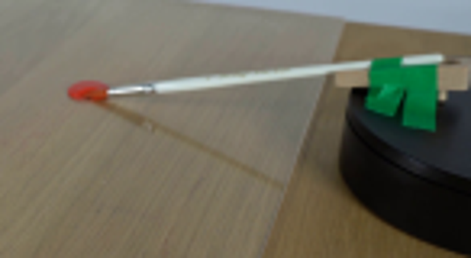
视觉工具实际返回图片 3

视觉工具实际返回图片 4
视觉工具实际返回图片 5
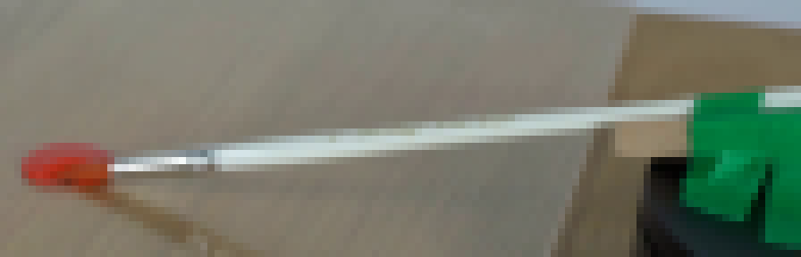
视觉工具实际返回图片 6
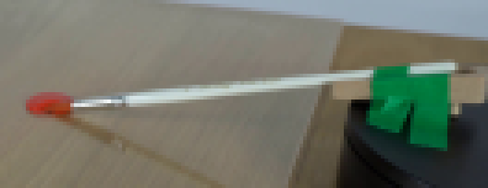
视觉工具实际返回图片 7
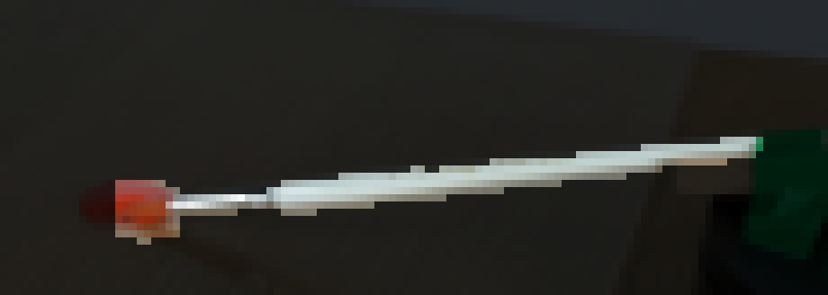
视觉工具实际返回图片 8
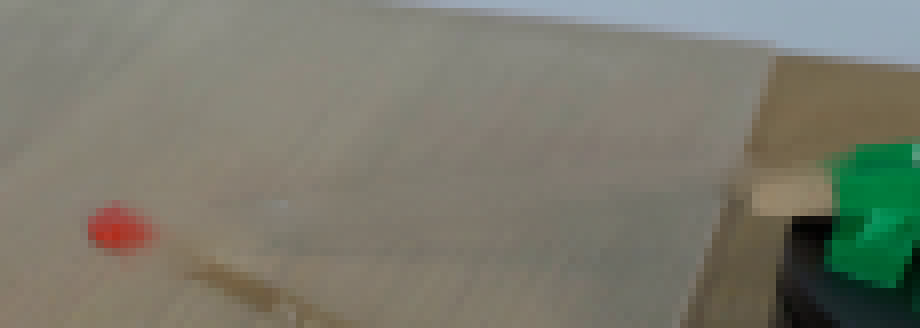
视觉工具实际返回图片 9
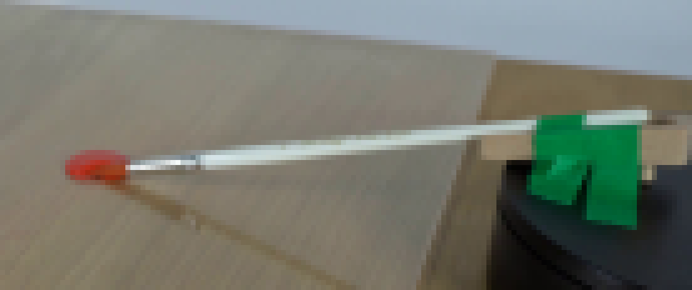
视觉工具实际返回图片 10
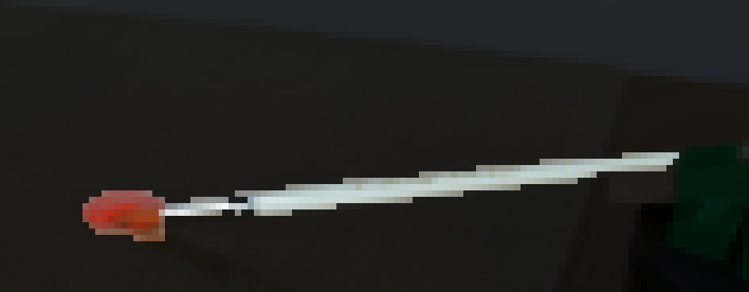
视觉工具实际返回图片 11
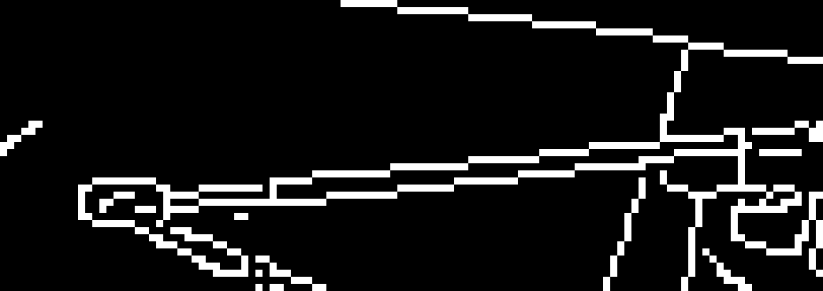
视觉工具实际返回图片 12
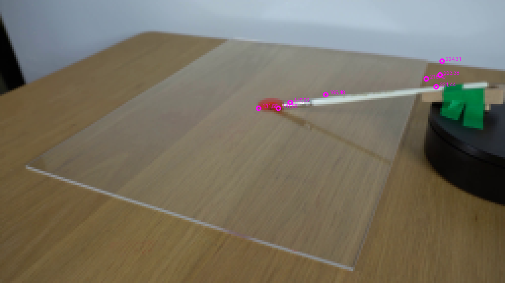
视觉工具实际返回图片 13
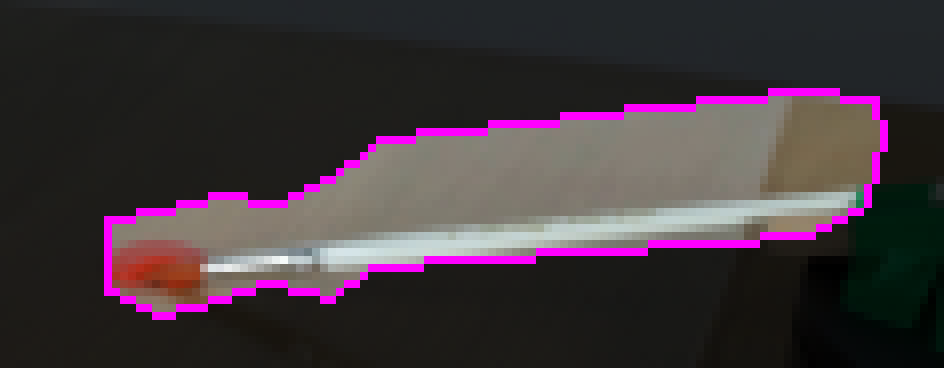
视觉工具实际返回图片 14
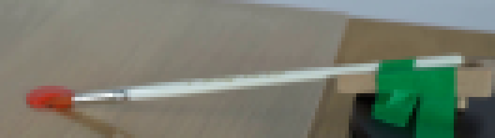
视觉工具实际返回图片 15
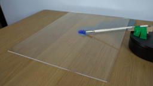
视觉工具实际返回图片 16
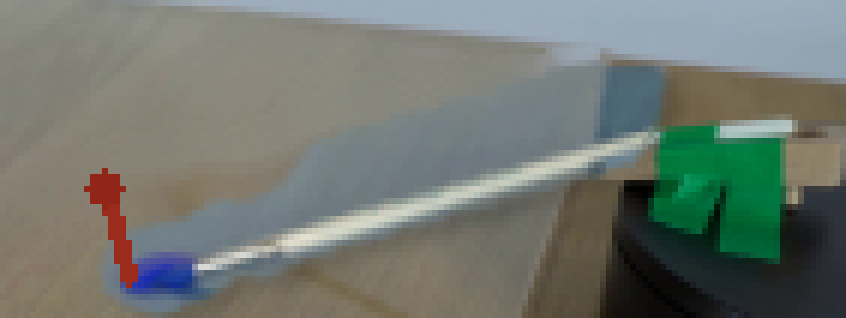
视觉工具实际返回图片 17
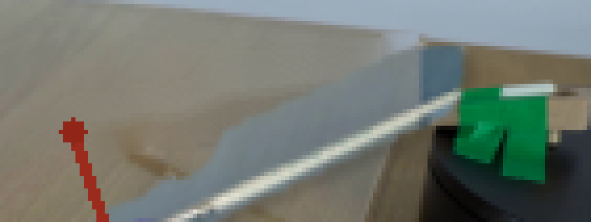
视觉工具实际返回图片 18
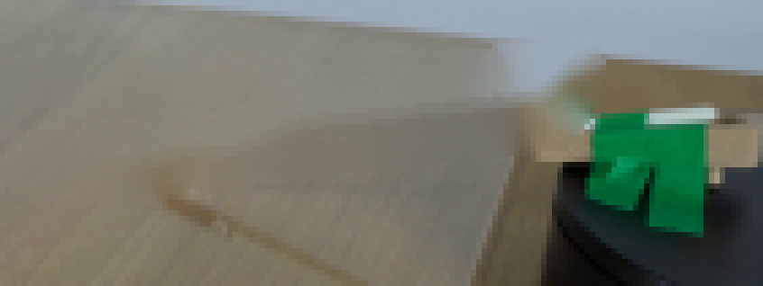
视觉工具实际返回图片 19
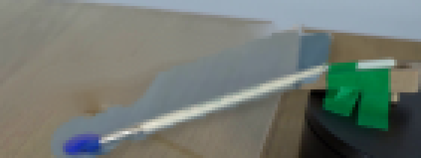
视觉工具实际返回图片 20
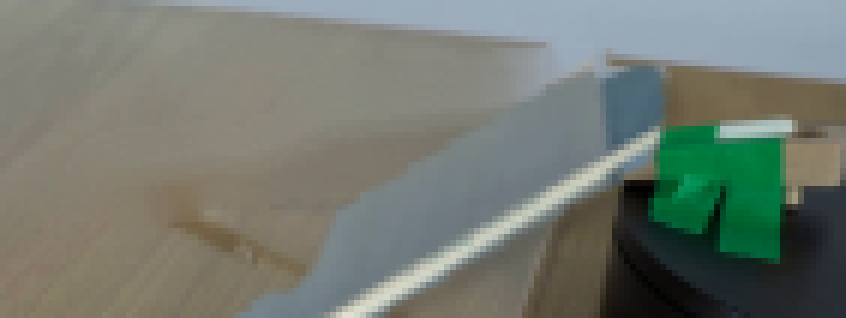
视觉工具实际返回图片 21
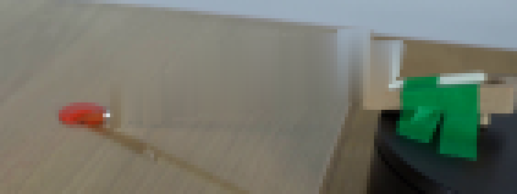
视觉工具实际返回图片 22
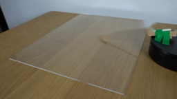
视觉工具实际返回图片 23
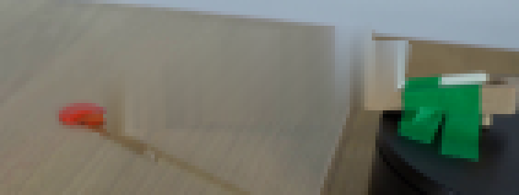
视觉工具实际返回图片 24

视觉工具实际返回图片 25
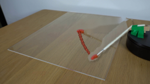
视觉工具实际返回图片 26
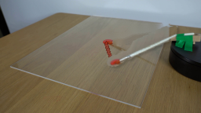
视觉工具实际返回图片 27
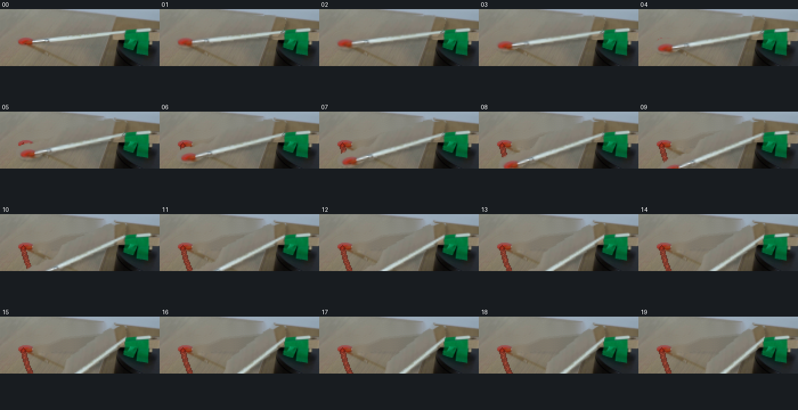
保存候选 1 份；完成命令 41 次；可验证图片返回 27 张。原始 API 响应与完整日志保留在本地。